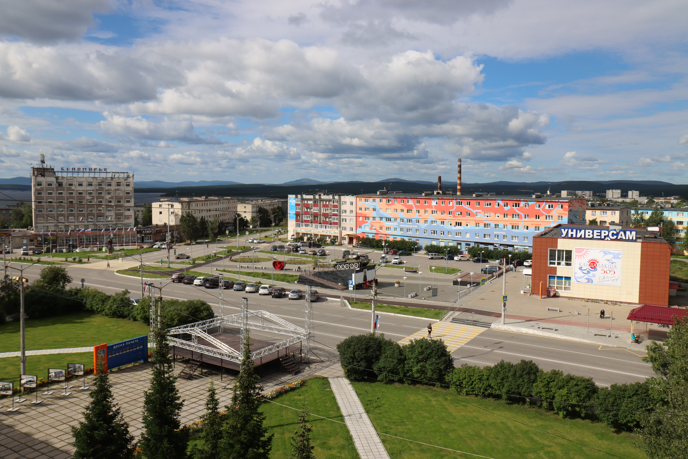
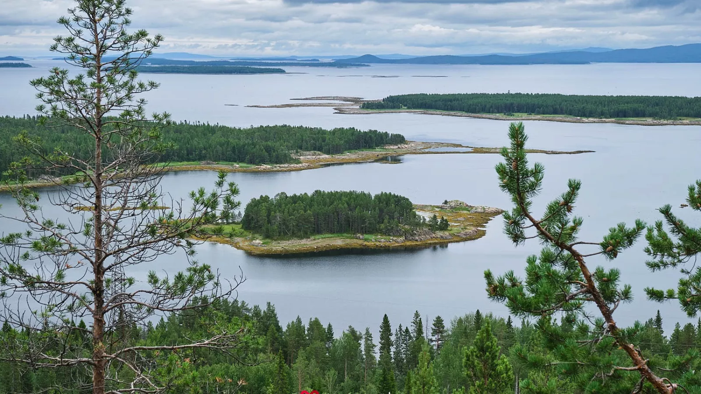
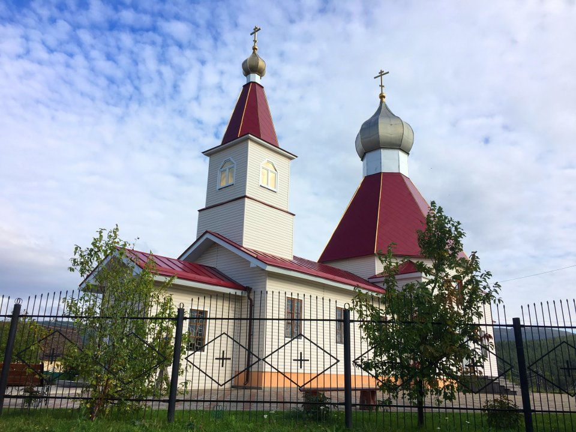
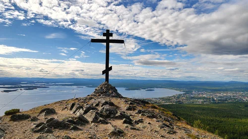
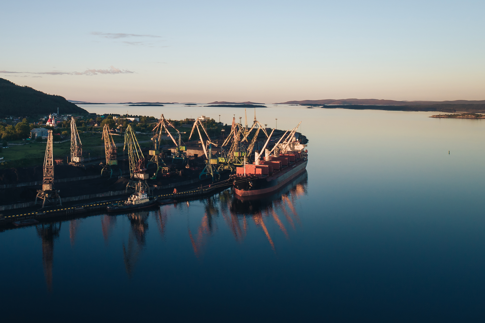
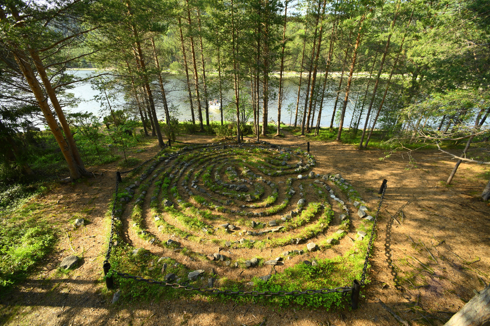
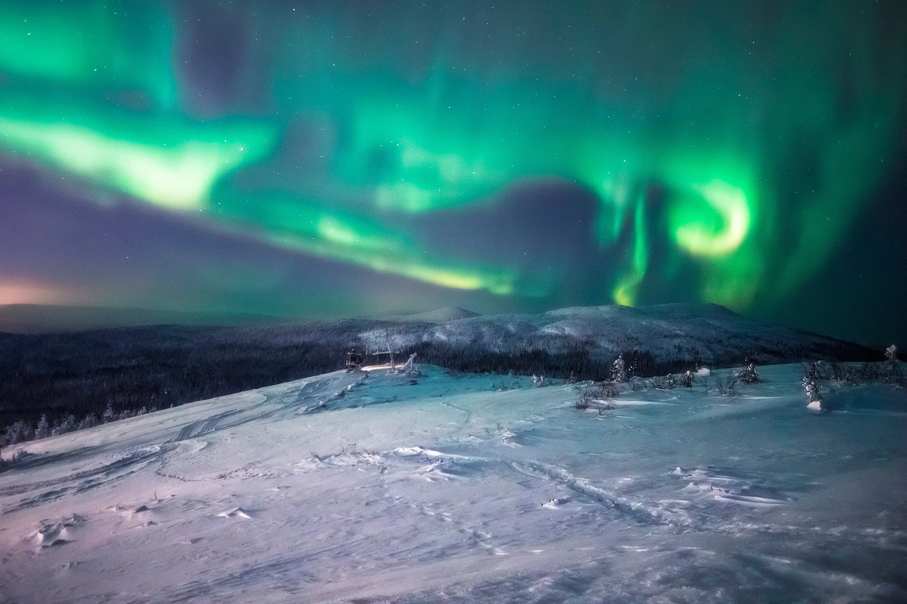

Кандалакша - жемчужина Белого моря
О городе
Кандалакша - город в Мурманской области, расположенный на берегу Кандалакшского залива Белого моря, в устье реки Нивы. Это один из старейших населённых пунктов Севера, впервые упомянутый в письменных источниках в XV веке.
Город является важным транспортным узлом: здесь пересекаются железнодорожные и автомобильные пути, ведущие в Мурманск и Карелию. Кандалакша известна своим алюминиевым заводом и морским портом.
Но главное богатство Кандалакши - удивительная северная природа: Белое море, леса, сопки, острова и знаменитые белые ночи. Это идеальное место для тех, кто любит суровую красоту Севера, рыбалку и экотуризм.
Достопримечательности
Кандалакшский заповедник

Один из старейших заповедников России, созданный в 1932 году. Здесь охраняются морские и прибрежные экосистемы Белого моря, гнездятся редкие птицы, а на островах можно увидеть тюленей и морских зайцев.
Церковь Рождества Иоанна Предтечи

Действующий православный храм, освящённый в 2004 году. Расположен в живописном месте у воды и является одной из визитных карточек города.
Гора Крестовая

Главная смотровая площадка Кандалакши. С вершины открывается панорамный вид на город, залив и окрестные сопки. Подъём доступен даже новичкам.
Беломорский порт

Один из крупнейших портов Северо-Запада России. Отсюда уходят суда с грузами по Белому морю и Северному морскому пути.
Каменный лабиринт "Вавилон"

Археологический памятник федерального значения, датируемый II тысячелетием до н. э. Находится примерно в 3-4 км к востоку от города на берегу. Многие отмечают, что дорога к нему не менее интересна, чем сам объект.
Полярные ночи и сияния

Зимой в окрестностях Кандалакши можно увидеть северное сияние, а летом — знаменитые белые ночи, когда солнце почти не заходит за горизонт.
Климат Кандалакши
| Сезон | Месяцы | Средняя температура | Особенности |
|---|---|---|---|
| Зима | декабрь — февраль | −10…−18 °C | Полярная ночь, снег, северное сияние |
| Весна | март — май | −5…+5 °C | Таяние снегов, ледоход на Ниве |
| Лето | июнь — август | +10…+20 °C | Белые ночи, рыбалка, туризм |
| Осень | сентябрь — ноябрь | 0…+8 °C | Сопки в золоте, сезон дождей |